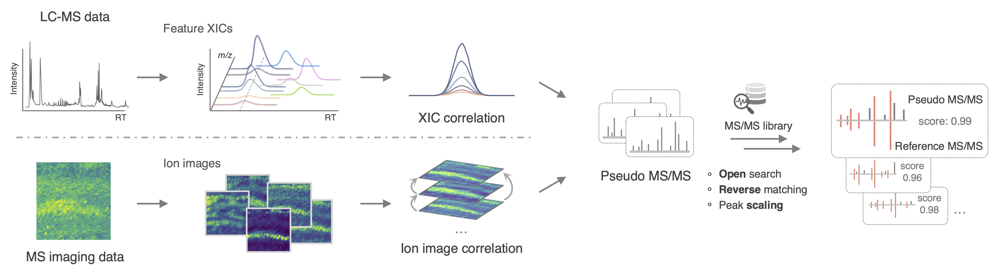
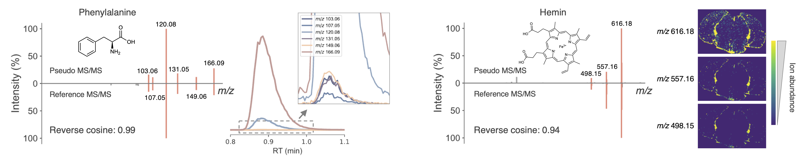
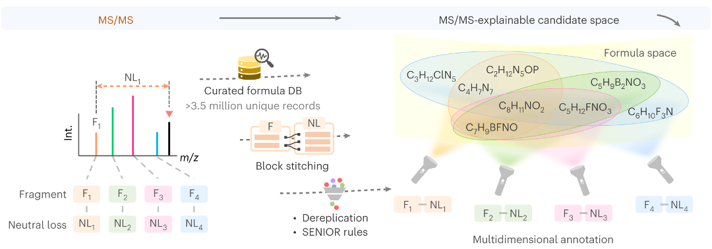

Hi, I am a postdoctoral researcher in Pieter C. Dorrestein's lab in UC San Diego.
I am passionate about mass spectrometry informatics and metabolomics. My research focuses on developing computational tools to facilitate the discovery of small molecules in complex biological samples.
Contact me: philipxsp@hotmail.com
Education & Employment
-

University of California, San Diego (US)
2023.8 - Present
Postdoctoral researcher
Supervisor: Pieter C. Dorrestein -

University of British Columbia (Canada)
2019.1 - 2023.4
Ph.D. in Chemistry
Supervisor: Tao Huan -

Zhejiang University (China)
2014.9 - 2018.6
B.Sc. in Chemistry (Qiushi Honors Program, Chu Kochen Honors College)
Supervisor: Feihe Huang, Zhan Lu -
University of Utah (US)
2017.3 - 2017.9
Visiting scholar
Supervisor: Peter Stang
Publications
See Google Scholar for my full publication list.
Featured Publications:
- [bioRxiv, 2024, in revision] Structural annotation of full-scan MS data: A unified solution for LC-MS and MS imaging analyses.
Shipei Xing, Vincent Charron-Lamoureux, Måns Ekelöf, Yasin El Abiead, Huaxu Yu, Oliver Fiehn, Theodore Alexandrov, Pieter C. Dorrestein. - [Nature Methods, 2023] BUDDY: molecular formula discovery via bottom-up MS/MS interrogation.
Shipei Xing, Sam Shen, Banghua Xu, Xiaoxiao Li, Tao Huan. - [Analytical Chemistry, 2021] SteroidXtract: deep learning-based pattern recognition enables comprehensive and rapid extraction of steroid-like metabolic features for automated biology-driven metabolomics.
Shipei Xing, Yibo Jiao, Melody Salehzadeh, Kiran K Soma, Tao Huan. - [Analytical Chemistry, 2020] Retrieving and utilizing hypothetical neutral losses from tandem mass spectra for spectral similarity analysis and unknown metabolite annotation.
Shipei Xing, Yan Hu, Zixuan Yin, Min Liu, Xiaoyu Tang, Mingliang Fang, Tao Huan. - [Analytica Chimica Acta, 2022] Radical fragment ions in collision-induced dissociation-based tandem mass spectrometry.
Shipei Xing, Tao Huan. - [Journal of the American Society for Mass Spectrometry, 2021] Recognizing contamination fragment ions in liquid chromatography–tandem mass spectrometry data. (Invited, JASMS 'Emerging Investigators' focus section)
Shipei Xing, Huaxu Yu, Min Liu, Qingquan Jia, Zhi Sun, Mingliang Fang, Tao Huan.



Selected Co-authored Publications:
- [Cell, 2024] The underappreciated diversity of bile acid modifications.
Ipsita Mohanty, Helena Mannochio-Russo, Joshua V Schweer, Yasin El Abiead, Wout Bittremieux, Shipei Xing, Robin Schmid, Simone Zuffa, Felipe Vasquez, Valentina B Muti, Jasmine Zemlin, Omar E Tovar-Herrera, Sarah Moraïs, Dhimant Desai, Shantu Amin, Imhoi Koo, Christoph W Turck, Itzhak Mizrahi, Penny M Kris-Etherton, Kristina S Petersen, Jennifer A Fleming, Tao Huan, Andrew D Patterson, Dionicio Siegel, Lee R Hagey, Mingxun Wang, Allegra T Aron, Pieter C. Dorrestein. - [Nature Protocols, 2024] Statistical analysis of feature-based molecular networking results from non-targeted metabolomics data.
Abzer K. Pakkir Shah, Axel Walter, Filip Ottosson, Francesco Russo, Marcelo Navarro-Díaz, Judith Boldt, Jarmo-Charles Kalinski, Eftychia E. Kontou, James Elofson, Alexandros Polyzois, Carolina González-Marín, Shane Farrell, Marie R. Aggerbeck, Thapanee Pruksatrakul, Nathan Chan, Yunshu Wang, Magdalena Pöchhacker, Corinna Brungs, Beatriz Cámara, Andrés M. Caraballo-Rodríguez, Andres Cumsille, Fernanda de Oliveira, Kai Dührkop, Yasin El Abiead, Christian Geibel, Lana G. Graves, Martin Hansen, Steffen Heuckeroth, Simon Knoblauch, Anastasiia Kostenko, Mirte CM. Kuijpers, Kevin Mildau, Stilianos Papadopoulos Lambidis, Paulo Wender Portal Gomes, Tilman Schramm, Karoline Steuer-Lodd, Paolo Stincone, Sibgha Tayyab, Giovanni Andrea Vitale, Berenike C. Wagner, Shipei Xing, Marquis T. Yazzie, Simone Zuffa, Martinus de Kruijff, Christine Beemelmanns, Hannes Link, Christoph Mayer, Justin JJ van der Hooft, Tito Damiani, Tomáš Pluskal, Pieter C. Dorrestein, Jan Stanstrup, Robin Schmid, Mingxun Wang, Allegra T. Aron, Madeleine Ernst, Daniel Petras. - [Analytical Chemistry, 2024] ChloroDBPFinder: Machine Learning-Guided Recognition of Chlorinated Disinfection Byproducts from Nontargeted LC-HRMS Analysis.
Tingting Zhao, Nicholas JP Wawryk, Shipei Xing, Brian Low, Gigi Li, Huaxu Yu, Yukai Wang, Qiming Shen, Xing-Fang Li, Tao Huan. - [Nature Communications, 2023] Open access repository-scale propagated nearest neighbor suspect spectral library for untargeted metabolomics.
Wout Bittremieux, Nicole E Avalon, Sydney P Thomas, Sarvar A Kakhkhorov, Alexander A Aksenov, Paulo Wender P Gomes, Christine M Aceves, Andrés Mauricio Caraballo-Rodríguez, Julia M Gauglitz, William H Gerwick, Tao Huan, Alan K Jarmusch, Rima F Kaddurah-Daouk, Kyo Bin Kang, Hyun Woo Kim, Todor Kondić, Helena Mannochio-Russo, Michael J Meehan, Alexey V Melnik, Louis-Felix Nothias, Claire O'Donovan, Morgan Panitchpakdi, Daniel Petras, Robin Schmid, Emma L Schymanski, Justin JJ van der Hooft, Kelly C Weldon, Heejung Yang, Shipei Xing, Jasmine Zemlin, Mingxun Wang, Pieter C. Dorrestein. - [Nature Communications, 2022] SIMILE enables alignment of tandem mass spectra with statistical significance.
Daniel GC Treen, Mingxun Wang, Shipei Xing, Katherine B Louie, Tao Huan, Pieter C. Dorrestein, Trent R Northen, Benjamin P Bowen. - [Analytical Chemistry, 2023] De novo cleaning of chimeric MS/MS spectra for LC-MS/MS-based metabolomics.
Tingting Zhao, Shipei Xing, Huaxu Yu, Tao Huan. - [Cell Reports, 2023] Paired microbiome and metabolome analyses associate bile acid changes with colorectal cancer progression.
Ting Fu, Tao Huan, Gibraan Rahman, Hui Zhi, Zhenjiang Xu, Tae Gyu Oh, Jian Guo, Sally Coulter, Anupriya Tripathi, Cameron Martino, Justin L McCarville, Qiyun Zhu, Fritz Cayabyab, Brian Low, Mingxiao He, Shipei Xing, Fernando Vargas, T Yu Ruth, Annette Atkins, Christopher Liddle, Janelle Ayres, Manuela Raffatellu, Pieter C. Dorrestein, Michael Downes, Rob Knight, Ronald M Evans. - [Environmental Health Perspectives, 2023] HExpPredict: in vivo exposure prediction of human blood exposome using a random forest model and its application in chemical risk prioritization.
Fanrong Zhao, Li Li, Penghui Lin, Yue Chen, Shipei Xing, Huili Du, Zheng Wang, Junjie Yang, Tao Huan, Cheng Long, Limao Zhang, BinWang, Mingliang Fang. - [Environmental Health Perspectives, 2021] Risk-based chemical ranking and generating a prioritized human exposome database.
Fanrong Zhao, Li Li, Yue Chen, Yichao Huang, Tharushi Prabha Keerthisinghe, Agnes Chow, Ting Dong, Shenglan Jia, Shipei Xing, Benedikt Warth, Tao Huan, Mingliang Fang. - [Analytical Chemistry, 2021] EVA: evaluation of metabolic feature fidelity using a deep learning model trained with over 25000 extracted ion chromatograms.
Jian Guo, Sam Shen, Shipei Xing, Ying Chen, Frank Chen, Elizabeth M Porter, Huaxu Yu, Tao Huan. - [Analytical Chemistry, 2021] ISFrag: de novo recognition of insource fragments for liquid chromatography–mass spectrometry data.
Jian Guo, Sam Shen, Shipei Xing, Huaxu Yu, Tao Huan. - [Analytical Chemistry, 2021] DaDIA: hybridizing data-dependent and data-independent acquisition modes for generating high-quality metabolomic data.
Jian Guo, Sam Shen, Shipei Xing, Tao Huan. - [Analytical Chemistry, 2020] Fold-change compression: an unexplored but correctable quantitative bias caused by nonlinear electrospray ionization responses in untargeted metabolomics.
Huaxu Yu, Shipei Xing, Lorenz Nierves, Philipp F Lange, Tao Huan.
Highlighted Projects
Honors & Awards
- 2022 Canadian Society of Mass Spectrometry (CSMS) Lake Louise Travel Award (sponsored by Thermo).
- 2022 – 2023 Affiliated Fellowship, UBC.
- 2022 Pei-Huang Tung and Tan-Wen Tung Graduate Fellowship, UBC.
- 2022 Gladys Estella Laird Research Fellowship, UBC.
- 2022 C L Wang Memorial Scholarship, UBC.
- 2022 Dr. Arnold By Travel Fellowship, UBC Chemistry.
- 2022 Graduate Student Travel Award, UBC.
- 2021 Sandra Morris and Richard Tillyer Scholarship in Chemistry, UBC Chemistry.
- 2021 Best Poster Award. 1st Chinese American Society for Mass Spectrometry (CASMS) Virtual Conference.
- 2020 – 2022 President's Academic Excellence Initiative PhD Award, UBC.
- 2019 – 2022 Faculty of Science PhD Tuition Award, UBC.
- 2019 – 2022 International Tuition Award, UBC.
- 2018 Outstanding Thesis Award, ZJU.